直線を曲線にする描き方
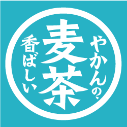
例
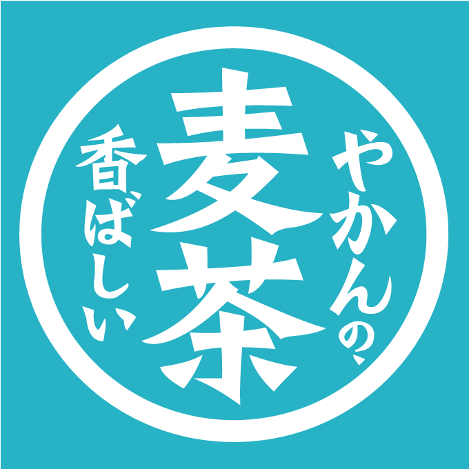 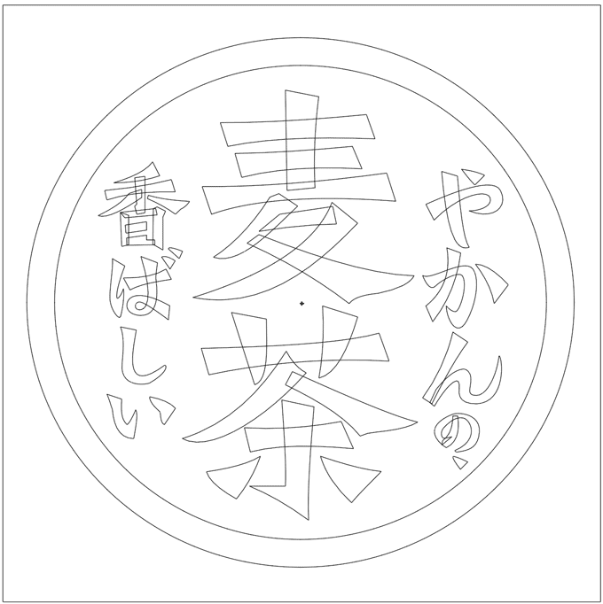
作成手順
新規ドキュメント作成
- 「幅：800px」「高さ：800px」
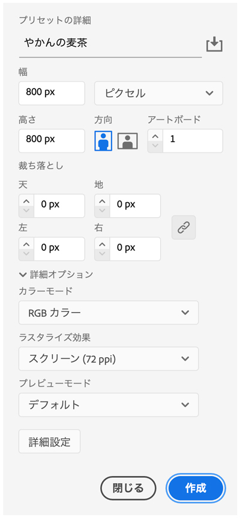
コピー＆ペーストした画像をテンプレート化
- 「画像レイヤー」の「サムネイル」をダブルクリック
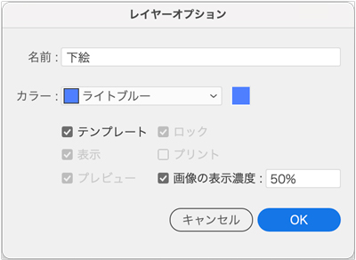
トレース用の新規レイヤー作成
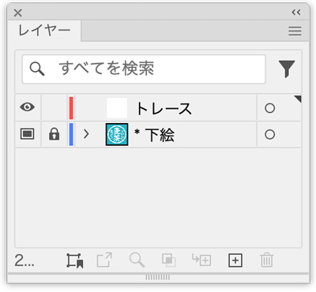
アンカーポイントツール
- ペンツールで描いた「長方形の辺」を曲げる
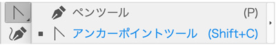
- 直線の上でゆっくりプレスすると、マウスのカーソルが以下のように変化します
- そのまま押しながら移動させると、思い通りの曲線になります
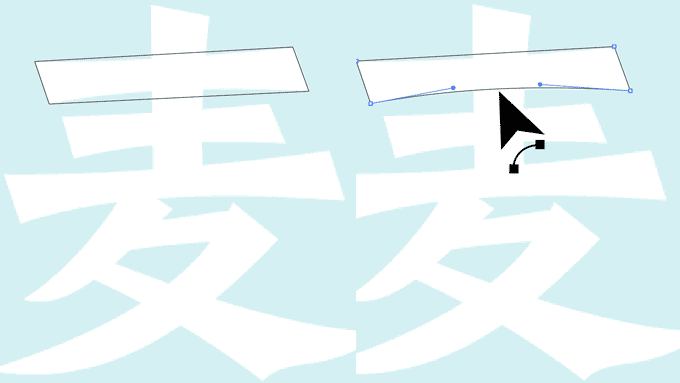
文字を描画
- 見やすく「描画面：黒」「線：なし」で作成
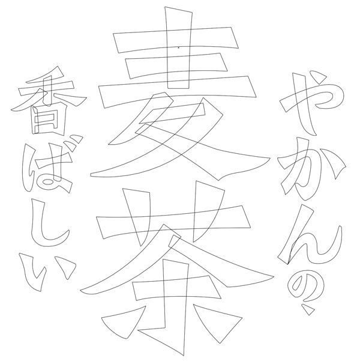
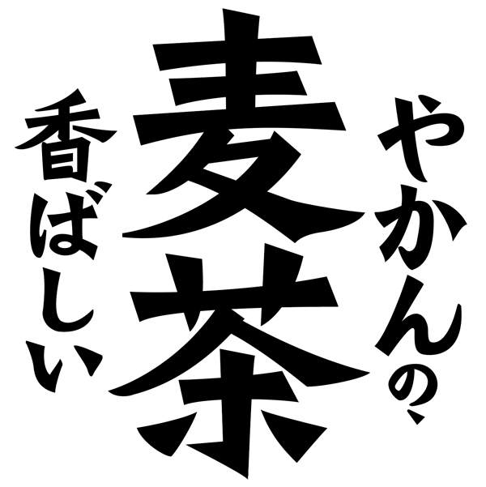
円を描く
- 外側の円を描く（正円ではありません）
パスのオフセットで内側の円を作成
- 「オブジェクト」メニュー → 「パス」→「パスのオフセット」
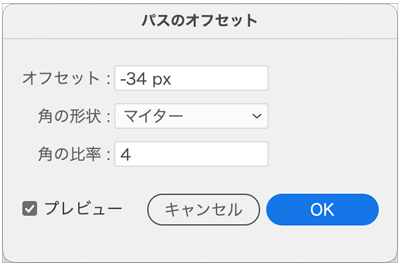
パスファインダー「前面オブジェクトで型抜き」
- ２つの円を選択して「前面オブジェクトで型抜き」する
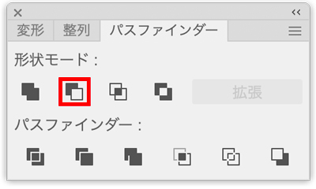
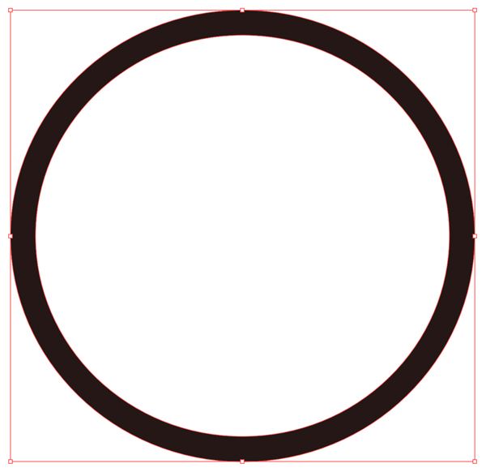
背景色用の正方形を描く
- 長方形は、重ね順「最背面」にしておく
- 背景色は「下絵の色」を、スポイトツールで抽出する
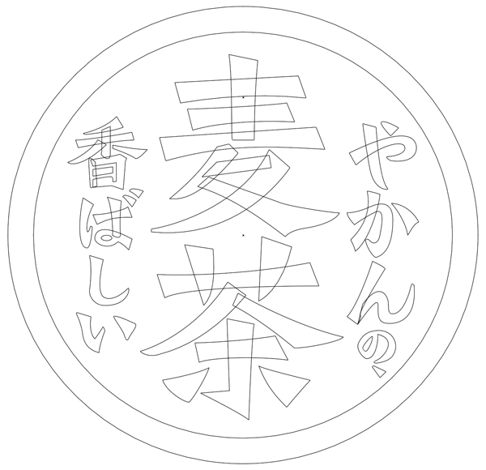
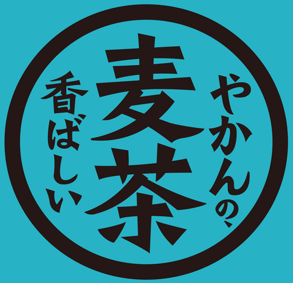
「黒色」を一括で「白色」にする
- 黒色のオブジェクトを１つ選んでおく
選択メニューの「共通」→カラー（塗り）を選択
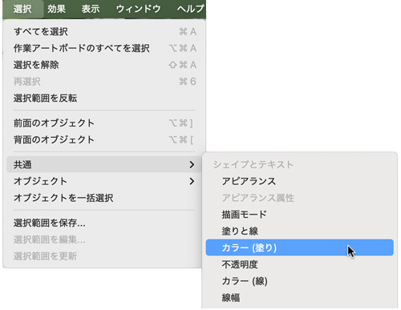
選択したオブジェクトの「塗り」を「白」にする
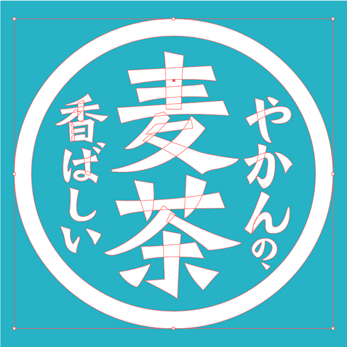
完成を名前をつけて保存
- ポートフォリオ用の作品として保存します
- Webに書き出す場合は「英字のタイトル」ですが、保存するときは日本語で「やかんの麦茶」でOK